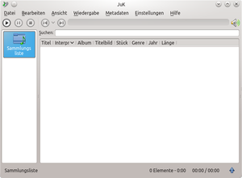

JuK
Dieser Artikel wurde für die folgenden Ubuntu-Versionen getestet:
Ubuntu 14.04 Trusty Tahr
Zum Verständnis dieses Artikels sind folgende Seiten hilfreich:
JuK  ist ein Programm zum Verwalten und Abspielen von Audiodateien. Das von Scott Wheeler entwickelte Programm ist für den KDE-Desktop konzipiert, kann aber natürlich auch unter anderen Desktopoberflächen Verwendung finden. JuK ist unter der GNU General Public License (GPL) herausgegeben.
ist ein Programm zum Verwalten und Abspielen von Audiodateien. Das von Scott Wheeler entwickelte Programm ist für den KDE-Desktop konzipiert, kann aber natürlich auch unter anderen Desktopoberflächen Verwendung finden. JuK ist unter der GNU General Public License (GPL) herausgegeben.
Das Programm bietet folgende Hauptfunktionen:
Zufallswiedergabe
Wiedergabelisten, auch aus benutzerdefinierter Suche
Sammelliste zur Darstellung und automatischen Aktualisierung der gesamten Musikdatenbank
benutzerdefiniert bestimmbare Ordner, welche überwacht werden sollen
Abspielwarteschlange
Metadaten-Verwaltung
Wiedergabehistorie
Cover-Verwaltung mittels Google Bildersuche
Unterstützung des Brennens einer CD mittels K3b
Dateiumbenennung basierend auf Metadaten
Integrierte MusicBrainz-Unterstützung für die internetbasierte Titelidentifizierung
u.v.m.
Unterstützte Dateiformate sind Ogg-Vorbis, FLAC, MP3 und Musepack (MPK).
Installation¶
|  |
| JuK |
JuK ist in den offiziellen Paketquellen vorhanden und kann über folgendes Paket installiert werden [1]:
juk
 mit apturl
mit apturl
Paketliste zum Kopieren:
sudo apt-get install juk
sudo aptitude install juk
Bei Verwendung einer Destkopoberfläche mit einem traditionellen Anwendungsmenü findet man das Programm nach erfolgreicher Installation im Menüpunkt "Multimedia" bzw. "Unterhaltungsmedien".
Das Programm JuK bietet zusätzlich die Möglichkeit, Audio- oder Daten-CDs mittels des Brennprogramms K3b zu brennen. Wenn diese Möglichkeit wahrgenommen werden soll, ist es nötig, dass dieses Programm installiert ist/wird, was bei einer Kubuntu-Installation bereits der Fall ist. Falls das Programm K3b nicht installiert sein sollte, kann es über folgendes Paket nachinstalliert werden:
k3b
mit apturl
Paketliste zum Kopieren:
sudo apt-get install k3b
sudo aptitude install k3b
Bedienung¶
Erster Programmstart¶
Beim ersten Programmstart öffnet sich ein Abfragefenster, welches die Möglichkeit bietet, einen oder mehrere Verzeichnisse, in dem der Benutzer seine Musik abgelegt hat, zum Einlesen anzugeben. Diese Ordner werden auch künftig vom Programm auf Veränderungen des Inhalts überwacht.
Über den Menüpunkt "Datei -> Ordner verwalten" können auch im Nachhinein noch neue Ordner zur Überwachung eingerichtet werden.
Ansicht¶
JuK präsentiert sich in der Standardeinstellung mit einer aufgeräumten Oberfläche Auf der linken Seite findet man die Sammlungsliste und rechts die einzelnen Titel der aktuellen Sammlung. Ganz oben unter der Menüleiste findet sich ein kleiner Wiedergabebereich mit den wichtigsten Abspielschaltflächen.
Über das Menü "Ansicht" können noch weitere Anzeigenelemente zugeschaltet werden, wie z.B. ein Metadaten-Editor zur Bearbeitung der an die Einzeltitel angehängten Zusatzinformationen, ein Verlauf, die aktuelle Warteschlange usw. Außerdem erlaubt dieses Menü das Umschalten der linken Spalte in eine kompaktere oder eine Baum-Ansicht.
Wiedergabe¶
Die Musikstücke lassen sich normal mittels der entsprechenden Schaltflächen oder über das Menü "Wiedergabe" wiedergeben. In dieses Menü ist auch eine Funktion zur Zufallswiedergabe oder zur Überblendung beim Titelwechsel integriert.
Mittels Menü "Datei -> Neu" können Wiedergabelisten erstellt oder durchsucht werden.

CD brennen¶
JuK bietet in Zusammenarbeit mit dem Brennprogramm K3b die Möglichkeit, eingelesene Titel direkt auf eine CD zu brennen. Hierzu sind die gewünschten Audiotitel mit der Maus zu markieren und nach anschließendem  rechtem Mausklick im erscheinenden Kontextmenü der Eintrag "Ausgewählte Einträge zu Audo- oder Daten-CD hinzufügen" zu wählen. In der anschließenden Abfrage muss nun noch angegeben werden, ob eine Audio-CD ("Audiomodus") oder eine Daten-CD ("Datenmodus") gebrannt werden soll. Es öffnet sich anschließend das Brennprogramm K3b, über welches der eigentliche Brennvorgang dann abgewickelt wird.
rechtem Mausklick im erscheinenden Kontextmenü der Eintrag "Ausgewählte Einträge zu Audo- oder Daten-CD hinzufügen" zu wählen. In der anschließenden Abfrage muss nun noch angegeben werden, ob eine Audio-CD ("Audiomodus") oder eine Daten-CD ("Datenmodus") gebrannt werden soll. Es öffnet sich anschließend das Brennprogramm K3b, über welches der eigentliche Brennvorgang dann abgewickelt wird.
Metadatenverwaltung¶
Mittels des Metadaten-Editors lassen sich an ein Musikstück zusätzliche Titelinformationen anhängen bzw. angehängte Informationen bearbeiten. Vorgesehen sind Felder zur Angabe von Interpret, Titelname, Albumname, Genre, Dateinamen, Aufnahmejahr, Länge, Bitrate u.a.
Falls an die Datei noch keine Metadaten angehängt sind, kann das Programm auch versuchen, die Zusatzinformationen anhand des Dateinamens zu erraten, was ggf. einen ersten guten Anhaltspunkt für die weitere Verwaltung des Titels liefern kann (Menü "Metadaten -> Metadaten anhand des Dateinamens raten").
Titelbilder¶
Über den Titelbildmanager (Menü "Metadaten -> Titelbildmanager") lassen sich Musikstücken Titelbilder zuweisen. Diese können aus dem Internet bezogen werden oder aus einer lokalen Bilddatei importiert werden.
Internetintegration¶
Ab Ubuntu Quantal Quetzal (JuK Programmversion 3.8) bietet das Programm auch eine Integration des Internetdienstes Last.fm. Über das Menü "Einstellungen -> Last.fm einrichten" kann der Benutzer seine Anmeldung bei dem Dienst vornehmen.
Kurzbefehle¶
Das Programm bietet die Möglichkeit, eine Programmsteuerung mittels Tastenkürzel einzurichten. Dies kann über das Menü "Einstellungen -> Kurzbefehle einrichten" erfolgen. Standardmäßig sind nur wenigen Programmfunktionen bereits Tastenkürzel zugewiesen. Letztlich bietet sich aber die Möglichkeit, praktisch alle Aktionen benutzerdefiniert mit Tastenkombinationen zu belegen, was ein sehr effektives Arbeiten mit dem Programm ermöglicht.
Hilfe¶
Über diese Kurzinformationen hinausgehende Hilfe bietet sich im beigefügten Handbuch zu JuK, welches über Menü "Hilfe -> Handbuch zu JuK" (alternativ Tastenkürzel F1 ) eingesehen werden kann.
 Programmübersicht
Programmübersicht- Erstellt mit Inyoka
-
 2004 – 2017 ubuntuusers.de • Einige Rechte vorbehalten
2004 – 2017 ubuntuusers.de • Einige Rechte vorbehalten
Lizenz • Kontakt • Datenschutz • Impressum • Serverstatus -
Serverhousing gespendet von